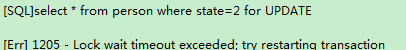

mysql select for update
本文最后更新于：2022年11月18日 上午
最近的项目中，因为涉及到Mysql数据中乐观锁和悲观锁的使用，所以结合项目和网上的知识点对乐观锁和悲观锁的知识进行总结。
悲观锁介绍
悲观锁是对数据是否被修改持悲观态度（认为数据在被修改的时候一定会存在并发问题），因此在整个数据处理过程中将数据锁定。悲观锁的实现，往往依靠数据库提供的锁机制（也只有数据库层提供的锁机制才能真正保证数据访问的排他性，否则，即使在应用层中实现了加锁机制，也无法保证外部系统不会修改数据）。
使用场景举例
商品goods表中有一个字段status，status为1代表商品未被下单，status为2代表商品已经被下单，那么我们对某个商品下单时必须确保该商品status为1。假设商品的id为1。如果不采用锁，那么操作方法如下：
//1.查询出商品信息
select status from t_goods where id=1;
//2.根据商品信息生成订单
insert into t_orders (id,goods_id) values (null,1);
//3.修改商品status为2
update t_goods set status=2;
上面这种场景在高并发访问的情况下很可能会出现问题。前面已经提到，只有当goods status为1时才能对该商品下单，上面第一步操作中，查询出来的商品status为1。但是当我们执行第三步Update操作的时候，有可能出现其他人先一步对商品下单把goods status修改为2了，但是我们并不知道数据已经被修改了，这样就可能造成同一个商品被下单2次，使得数据不一致。所以说这种方式是不安全的。
使用悲观锁来实现
在上面的场景中，商品信息从查询出来到修改，中间有一个处理订单的过程，使用悲观锁的原理就是，当我们在查询出goods信息后就把当前的数据锁定，直到我们修改完毕后再解锁。那么在这个过程中，因为goods被锁定了，就不会出现有第三者来对其进行修改了。要使用悲观锁，我们必须关闭mysql数据库的自动提交属性。
set autocommit=0;
//设置完autocommit后，我们就可以执行我们的正常业务了。具体如下：
//0.开始事务
begin;/begin work;/start transaction; (三者选一就可以)
//1.查询出商品信息
select status from t_goods where id=1 for update;
//2.根据商品信息生成订单
insert into t_orders (id,goods_id) values (null,1);
//3.修改商品status为2
update t_goods set status=2;
//4.提交事务
commit;/commit work;
注：上面的begin/commit为事务的开始和结束，因为在前一步我们关闭了mysql的autocommit，所以需要手动控制事务的提交，在这里就不细表了。
上面的第一步我们执行了一次查询操作：select status from t_goods where id=1 for update;与普通查询不一样的是，我们使用了select…for update的方式，这样就通过数据库实现了悲观锁。此时在t_goods表中，id为1的那条数据就被我们锁定了，其它的事务必须等本次事务提交之后才能执行。这样我们可以保证当前的数据不会被其它事务修改。
注：需要注意的是，在事务中，只有SELECT … FOR UPDATE 或LOCK IN SHARE MODE 相同数据时会等待其它事务结束后才执行，一般SELECT … 则不受此影响。拿上面的实例来说，当我执行select status from t_goods where id=1 for update;后。我在另外的事务中如果再次执行select status from t_goods where id=1 for update;则第二个事务会一直等待第一个事务的提交，此时第二个查询处于阻塞的状态，但是如果我是在第二个事务中执行select status from t_goods where id=1;则能正常查询出数据，不会受第一个事务的影响。
补充：MySQL select…for update的Row Lock与Table Lock
上面我们提到，使用select…for update会把数据给锁住，不过我们需要注意一些锁的级别，MySQL InnoDB默认Row-Level Lock，所以只有「明确」地指定主键，MySQL 才会执行Row lock (只锁住被选取的数据) ，否则MySQL 将会执行Table Lock (将整个数据表单给锁住)。
举例说明：
数据库表t_goods，包括id,status,name三个字段，id为主键，数据库中记录如下;
注：为了测试数据库锁，我使用两个console来模拟不同的事务操作，分别用console1、console2来表示。
例1: (明确指定主键，并且有此数据，row lock)
console1：查询出结果，但是把该条数据锁定了
set autocommit=0;
SELECT * from t_goods where id=1 for update;
console2：查询被阻塞
console2：如果console1长时间未提交，则会报错
例2: (明确指定主键，若查无此数据，无lock)
console1：查询结果为空
set autocommit=0;
SELECT * from t_goods where id=4 for update;
console2：查询结果为空，查询无阻塞，说明console1没有对数据执行锁定
set autocommit=0;
SELECT * from t_goods where id=4 for update;
例3: (无主键，table lock)
console1：
set autocommit=0;
SELECT * from t_goods where status=1 for update;
console2：
select * from person where state=2 for UPDATE
查询阻塞，说明console1把表给锁住了.若console1长时间未提交，则返回锁超时。

例4: (主键不明确，table lock)
console1：查询正常
set autocommit=0;
SELECT * from t_goods where id>1 for update;
console2：查询被阻塞，说明console1把表给锁住了。
select * from person where id>=2 for UPDATE
以上就是关于数据库主键对MySQL锁级别的影响实例，需要注意的是，除了主键外，使用索引也会影响数据库的锁定级别。
举例：我们修改t_goods表，给status字段创建一个索引。
例5: (明确指定索引，并且有此数据，row lock)
console1：
set autocommit=0;
SELECT * from t_goods where status=1 for update;
console2：查询status=1的数据时阻塞，超时后返回为空，说明数据被console1锁定了
例6: (明确指定索引，若查无此数据，无lock)
console1：查询status=3的数据，返回空数据
set autocommit=0;
SELECT * from t_goods where status=3 for update;
console2：查询status=3的数据，返回空数据
SELECT * from t_goods where status=3 for update;